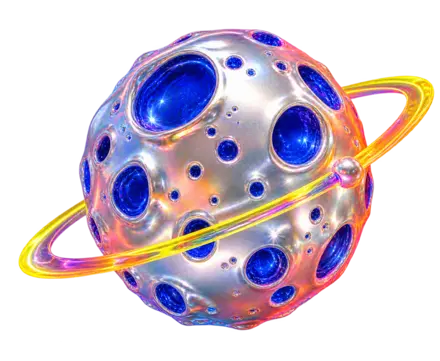
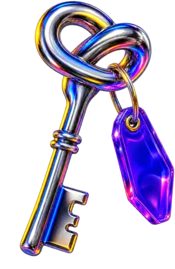
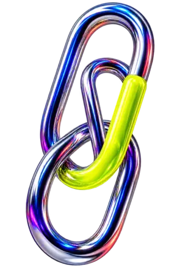

ASSIGNMENT 01 / MISPLACED MATTER
Deliver six things to the docking bay.
Change the direction of gravity until every object crosses the striped bay. There is no correct down—only useful momentum.
0 OF 6 DOCKED
INCOMPLETE / PROMISING
UNLICENSED PHYSICS / FILE 14
Reassign down. Tip the office sideways. Help six misplaced objects reach a destination they were never designed for.
ENTER THE ORIENTATION LAB ↘


03 / ORBITAL MISFILE01 / KEY TO UPX—14Change the direction of gravity until every object crosses the striped bay. There is no correct down—only useful momentum.
Choose a stored policy. The orientation field will obey without asking whether it makes sense.
The floor has been notified.